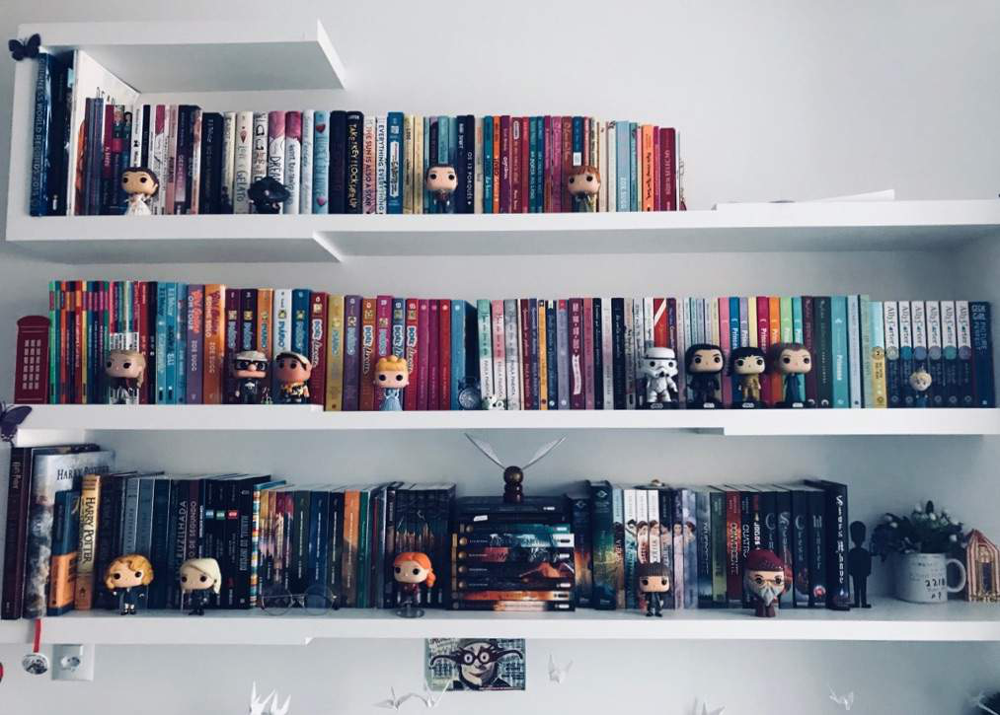

Oi, meu nome é Juliana, tenho 15 anos e sou simplesmente apaixonada em livros desde que me conheço por gente!
Essa paixão começou desde que comecei a ler, comecei a ler toda hora e todo minuto, e minha mãe tinha que me parar, pois eu estava "lendo demais".
Outra partida para essa tão grande paixão, foi a minha primeira visita á biblioteca municipal da minha cidade, logo que entrei ali, fiquei totalmente maravilhada,
chegando em casa e já correndo falar pra meus pais que eu precisava de uma carterinha, para poder pegar quantos livros eu quisesse.
Comecei nas leituras básicas, gibi, eu AMAVA gibis!!! Comecei avançar na leitura com páginas maiores, até um certo dia eu querer pegar um livro
da famosa Paula Pimenta. "Minha vida fora de série", eu tinha 12 anos, e me apaixonei totalmente nesse mundo...
Estou no ensino médio, amo chocolate, sou uma formiga para doces. Gosto de assistir séries, principalmente ficção, sou fascinada em Harry Potter, e
sem dúvidas uma das melhores sagas que tem no mundo!! Essa sou eu, bem vindo ao meu blog>3.
Caso queira me seguir nas redes sociais clique aqui!
Aqui estão alguns de meus livros favoritos do momento (sempre atualizo!!), se quiser ajuda para escolher
sua próxima leitura, confie em mim, meus gostos são ótimos!!!
